Práctica 05: Series de Fourier en tiempo continuo
Intituto Politécnico Nacional
Unidad Profesional Interdisciplinaria en Ingeniería y Tecnologías Avanzadas
Análisis de Señales y Sistemas
Grupo: 2MV1
Alumnos:
- Carmona Bellido Marco Tulio
- Ordorica Muñoz Leonardo Antonio
Contents
Introducción
En este momento vamos a hablar acerca de los coeficientes de una serie de Fourier discreta exponencial compleja, conocidos como los 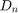. Para poder trabajar las series de Fourier con software necesitamos hacer uso de las aproximaciones numéricas trabajadas en la práctica anterior para calcular numéricamente los coeficientes de la serie de Fourier exponencial compleja.
En este caso haremos uso de la Cuadratura Gaussiana para aproximar la integral del calculo de los coeficientes:
Para exponer el uso de la Cuadratura Gaussiana para calcular los coeficientes de la serie vamos a realizar un ejemplo del calculo de los coeficientes del problema 4 del PR10:
En este caso 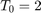 y 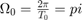
Procedemos a calcular los coeficientes
La fórmula de la señal es 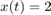 de -1/2 a 1/2 y al introducirla en la fórmula para calcular los coeficientes nos queda como:
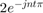, la cual será la función a integrar desde -1/2 hasta 1/2
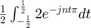
Asi, procedemos con la integral realizandola con la Cuadratura Gaussiana pero como los limites de integración no son desde -1 hasta 1, tenemos que hacer uso de la fórmula para el adecuamiento de los límites.
Por lo que al aplicar la fórmula, tenemos que:
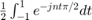
Sería la nueva fórmula a integrar, pudiendo realizarla de -1 a 1
Asi tenemos que 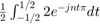
Puede ser aproximada por:
En este caso haremos uso del polinomio de Legendre de grado 2:
Realizando las respectivas sustituciones:
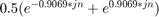
Ahora procedemos a graficar el espectro de Fourier para estos coeficientes:
Espectro de magnitud
n=-10:10; D_n=0.5*(exp(-0.9069*1i*n)+exp(0.9069*1i*n)); stem(n,abs(D_n)); axis([-11 11 -0.5 2]); title('Espectro de magnitud'); xlabel('n'); ylabel('|D_n|'); grid on; ax = gca; ax.XAxisLocation = 'origin'; ax.YAxisLocation = 'origin';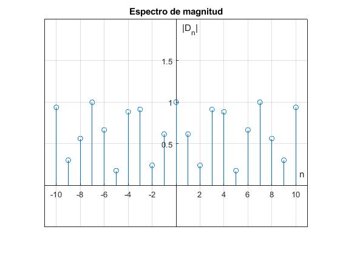
Espectro de fase
stem(n,angle(D_n)); axis([-11 11 -1 4]); title('Espectro de fase'); xlabel('n'); ylabel('\angleD_n'); grid on; ax = gca; ax.XAxisLocation = 'origin'; ax.YAxisLocation = 'origin';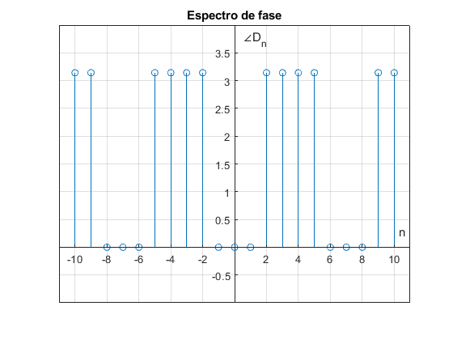
Con esto podemos observar que la aproximación con los polinomios de Legendre (Cuadratura Gaussiana) es muy buena ya que los espectros son correctos.
Objetivos
- Realizar gráficas de series de Fourier exponenciales y trigonométricas en tiempo continuo
- Manipulación de instrucciones en MATLAB
- Calculo númerico de los coeficientes de Fourier
Ejemplo 6.1
La señal a la que se desea calcular la serie de Fourier trigonometrica es la siguiente.
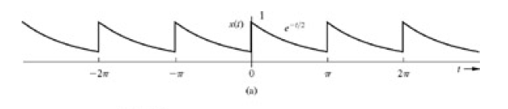
Para la generacion de la serie de fourier trigonometrica compacta de esta señal se realizan algunos cambios a la funcion sfc() a la cual ahora se llama sft(). A comtinuacion se ejecuta el codigo necesario para poder generar la serie de Fourier de esta señal con 4 armomnicos.
cn = @(n)0.504*(2./(1+16*n.^2).^(1/2)); c0 = 0.504; fi = @(n) atan(-4*n); f = @(t) exp(-t/2); armo = 4; sft(0,pi,c0, cn, fi, f, armo, 0, 5*pi)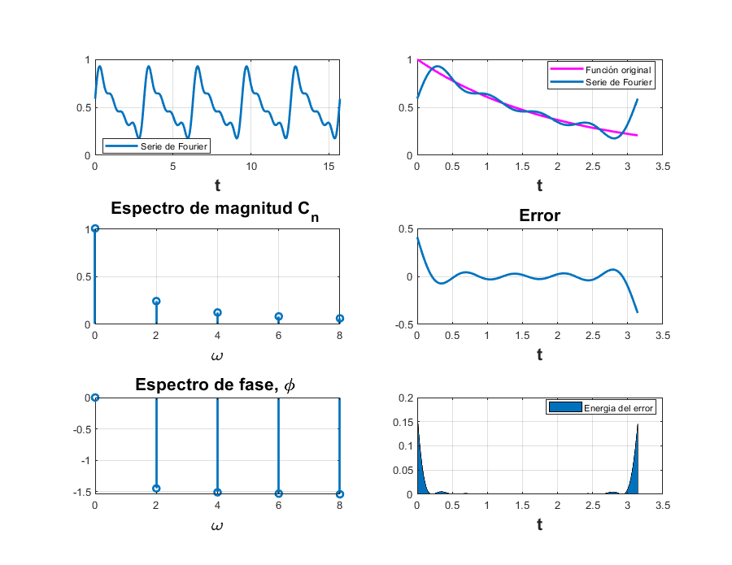
Ahora ejecutaremos la misma funcion pero con 15 armonicos para observar el cambio de la serie de fourier.
armo = 15; sft(0,pi,c0, cn, fi, f, armo, 0, 5*pi)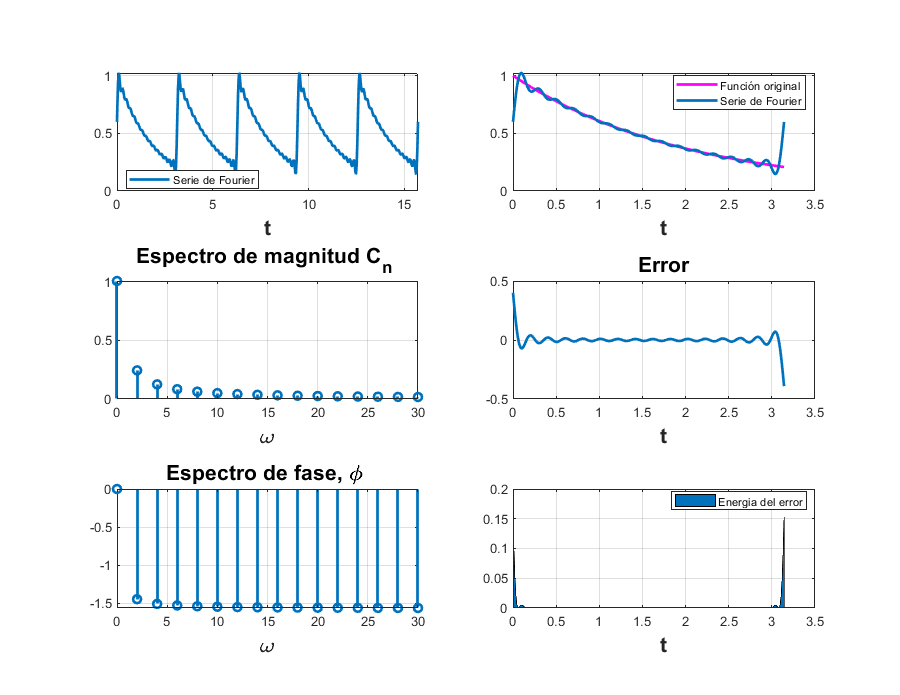
Como nos podemos dar cuenta el error de la serie de Fourier con respecto a la señal original disminuye entre mas armonicos se usan y por consiguiente la serie de Fourier se asemeja aun mas a la señal.
Ejemplo 6.2
Para este segundo ejemplo se desea realizar los mismos calculos que para el ejemplo 6.1, a la siguiente señal.
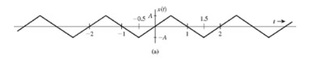
La funcion esta desinida de la siguiente manera
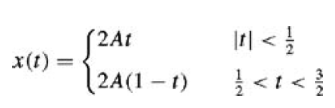
En matlab la definimos como: f = @(t) 2*A*t.*(t>= -0.5 & t<= 0.5) + 2*A*(1-t).*(t>= 0.5 & t<= 1.5); Con todos los parametros de la serie de Fourier ya calculados se introducen en el codigo y ahora se ejecuta la funcion sfc().
A = 3; f = @(t) 2*A*t.*(t>= -0.5 & t<= 0.5) + 2*A*(1-t).*(t>= 0.5 & t<= 1.5); d0 = 0; dn = @(n) -8*A*i*sin(n.*pi/2)./(2.*(n^2).*pi^2) armo = 4; sfc(-0.5,1.5,dn,d0,f,armo,-1,10)
dn =
function_handle with value:
@(n)-8*A*i*sin(n.*pi/2)./(2.*(n^2).*pi^2)
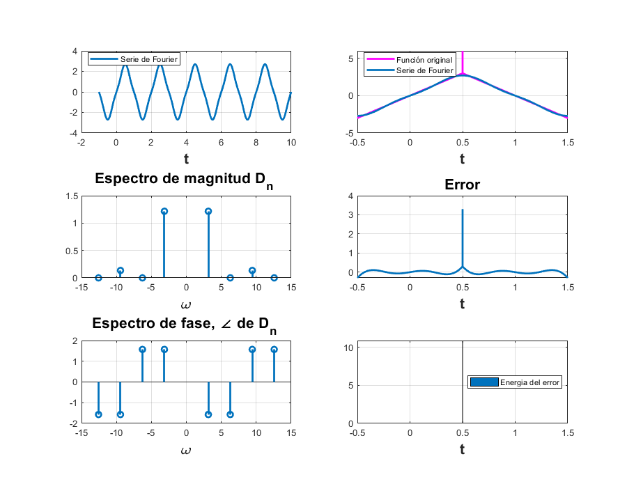 Nuevamente se ejecuta la funcion anterior pero con 15 armonicos.
armo = 15; sfc(-0.5,1.5,dn,d0,f,armo,-1,10)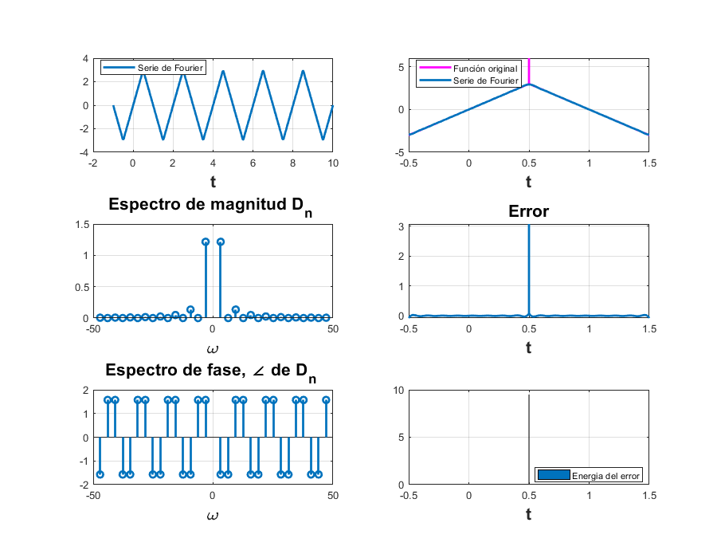
Ejemplo 6.4
La señal a la que se le realizara la serie de Fourier es la siguiente.
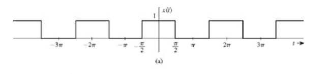
Ahora definimos en el codigo los parametros necesarios para poder graficar esta señal mediante su serie de Fourier.
f = @(t) (t>= -pi/2 & t<= pi/2); d0 = 1/2; dn = @(n) 2*sin(n*pi./2)./(2.*n.*pi); armo = 4; sfc(-pi,pi,dn,d0,f,armo,-pi,10*pi)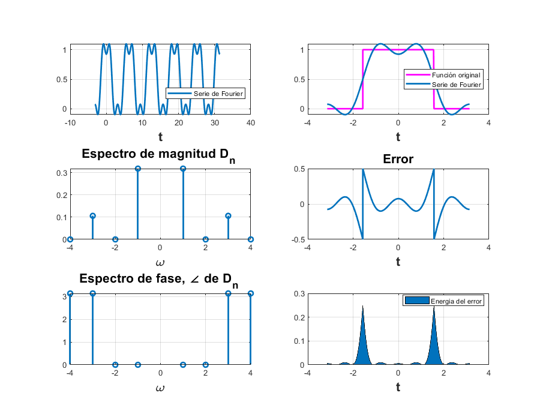
Nuevamente repetimos para 15 armonicos, y asi podremos observar como la serie de Fourier se aproxima mucho mas a la señal original.
armo = 15; sfc(-pi,pi,dn,d0,f,armo,-pi,10*pi)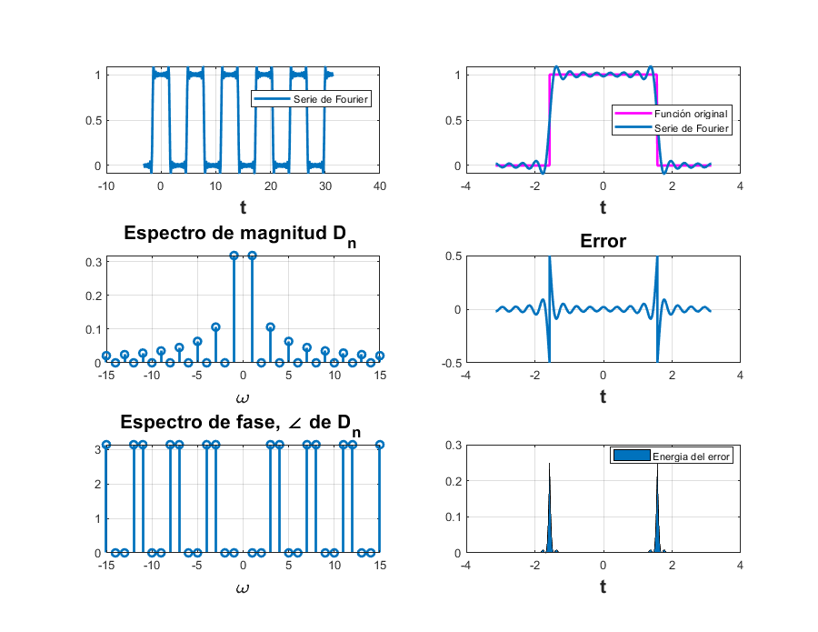
Ejemplo 6.5
Para este ejemplo retomamos la señal descrita en el Ejemplo 6.1, solo que en ta ocacion se graficara su serie de Fourier exponencial compleja en vez de la serie de Fourier trigonometrica compacta.
A partir de su serie de Fourier trigonometrica compacta se determinan los coeficientes para la serie de exponencial compleja y se tiene cmomo resultado lo siguiente que sera ingresado en el codigo para poder ser graficado.
d0 = 0.504; dn=@(n) 0.504/(1+4*n*j); f=@(t) exp(-t/2); armo = 4; sfc(0,pi,dn,d0,f,armo,-7,9)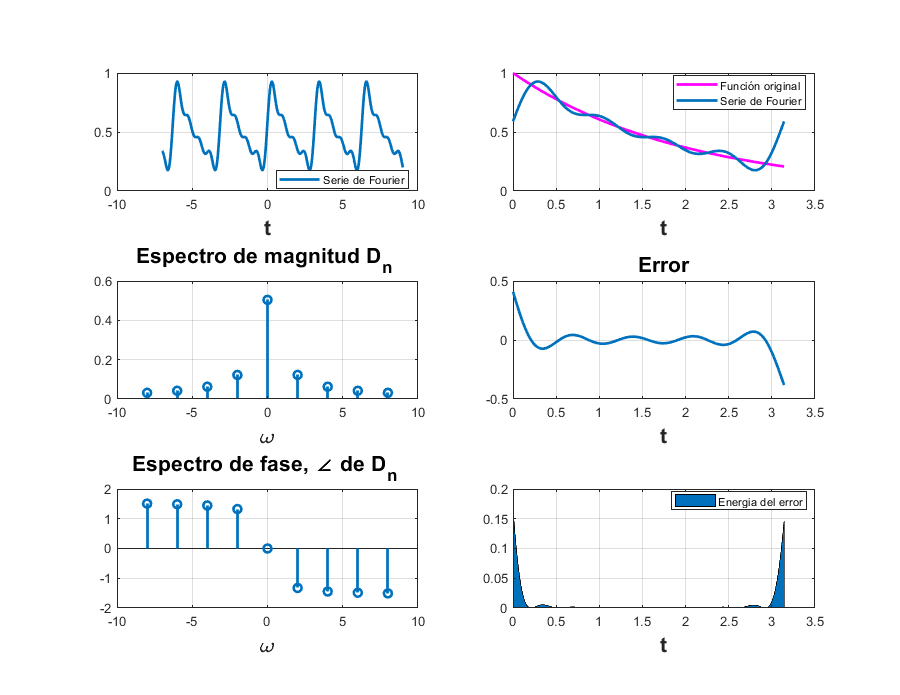
Ahora repetimos el codigo aumentando el numero de armonicos a 15.
armo = 15; sfc(0,pi,dn,d0,f,armo,-7,9)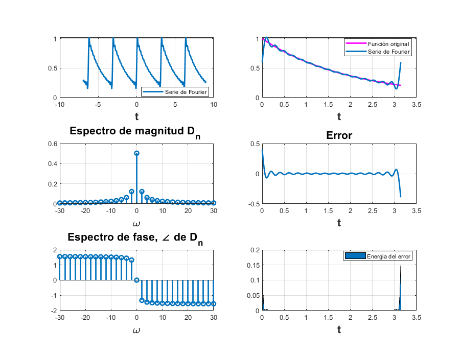
Ejemplo 6.7
La señal de este ejemplo es un tren de impulsos con 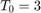
T0 = 3; d0 = 1/T0; dn = @(t) 1/T0; armo = 4; f = @(t) dirac(t); sfc2(0,pi,dn,d0,f,armo,-7,9)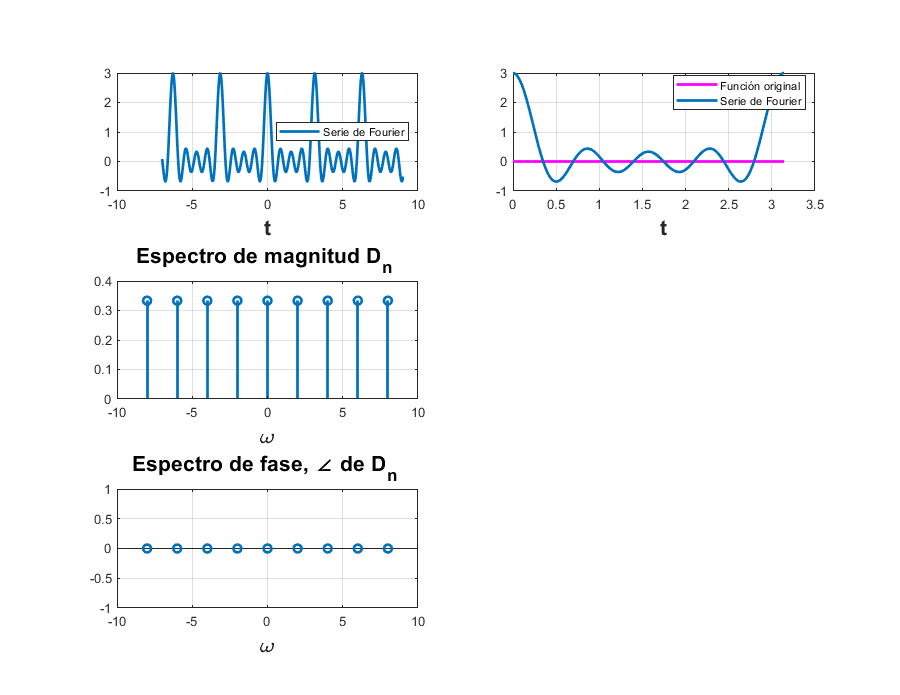
Problema 7
Código que implementa la regla del trapecio compuesto para n=15 aplicado al ejemplo de la práctica, en el cual la función a la que se le va a calcular la serie de Fourier es 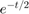, y al introducirla en la fórmula para calcular los coeficientes obtenemos 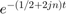.
clear; h=pi/15; for k=1:1:15 t(k)=k*h; end D_0=(1/pi)*(h/2)*(1+2*sum(exp(-1/2*t))+exp(-1/2*pi)) D_1=(1/pi)*(h/2)*(1+2*sum(exp(-(1/2+2*1i*1)*t))+exp(-(1/2+2*1i*1)*pi)) D_2=(1/pi)*(h/2)*(1+2*sum(exp(-(1/2+2*1i*2)*t))+exp(-(1/2+2*1i*2)*pi)) D_3=(1/pi)*(h/2)*(1+2*sum(exp(-(1/2+2*1i*3)*t))+exp(-(1/2+2*1i*3)*pi)) D_4=(1/pi)*(h/2)*(1+2*sum(exp(-(1/2+2*1i*4)*t))+exp(-(1/2+2*1i*4)*pi)) D_n=[D_0 D_1 D_2 D_3 D_4]; n=[0:4];
D_0 =
0.5186
D_1 =
0.0440 - 0.1168i
D_2 =
0.0221 - 0.0583i
D_3 =
0.0178 - 0.0361i
D_4 =
0.0164 - 0.0237i
Espectro de magnitud
stem(n,abs(D_n)); axis([-1 5 -0.5 1]); title('Espectro de fase'); xlabel('n'); ylabel('|D_n|'); grid on; ax = gca; ax.XAxisLocation = 'origin'; ax.YAxisLocation = 'origin';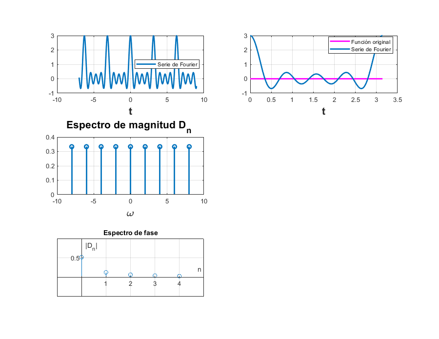
Espectro de fase
stem(n,angle(D_n)); axis([-1 5 -2 1]); title('Espectro de fase'); xlabel('n'); ylabel('\angleD_n'); grid on; ax = gca; ax.XAxisLocation = 'origin'; ax.YAxisLocation = 'origin'; %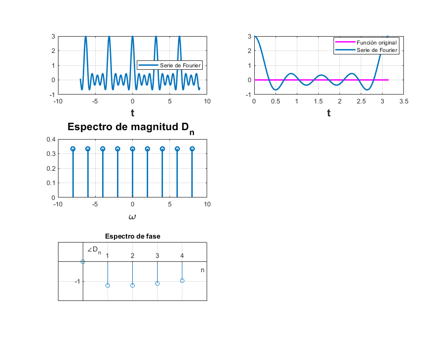
Aqui tenemos las aproximaciones usando la regla del trapecio compuesto y a continuación vamos a utilizar la aproximación usada en el COMPUTER EXAMPLE C6.4 del Lathi para comparar cual de las dos aproximaciones es mejor o más precisa.
T_0 = pi; N_0 = 256; T = T_0/N_0; t = (0:T:T*(N_0-1))'; M = 10; x = exp(-t/2); x(1)=(exp(-pi/2)+1)/2; D_n=fft(x)/N_0; n = [-N_0/2:N_0/2-1]'; clf; subplot (2, 2, 1); stem(n, abs(fftshift (D_n)),'k'); axis ([-M M -.1 .6]); xlabel('n'); ylabel('|D_n|'); subplot (2, 2, 2); stem(n, angle(fftshift(D_n)),'k'); axis([-M M -pi pi]); xlabel ('n'); ylabel('\angle D_n [rad]'); D_n(1) D_n(2) D_n(3) D_n(4) D_n(5)
ans =
0.5043
ans =
0.0297 - 0.1186i
ans =
0.0078 - 0.0621i
ans =
0.0035 - 0.0417i
ans =
0.0020 - 0.0314i
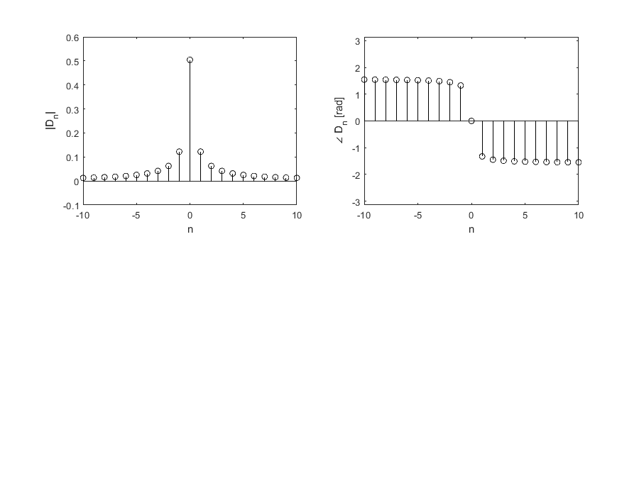 A continuación haremos una comparación entre los dos algoritmos listando en una tabla cada uno;
Del lado izquierdo se encuentran los coeficientes calculados con el algoritmo del Lathi y del lado derecho los calculados con la regla del trapecio compuesto.
Tabla=[D_n(1),D_0;D_n(2),D_1;D_n(3),D_2;D_n(4),D_3;D_n(5),D_4;]
Tabla = 0.5043 + 0.0000i 0.5186 + 0.0000i 0.0297 - 0.1186i 0.0440 - 0.1168i 0.0078 - 0.0621i 0.0221 - 0.0583i 0.0035 - 0.0417i 0.0178 - 0.0361i 0.0020 - 0.0314i 0.0164 - 0.0237i
Como podemos observar de aqui y con las graficas, las aproximaciones son mejores con el algoritmo presentado en el Lathi.
Referencias
- Martínez, R. [Mate y así]. (2018 Agosto). Métodos Numéricos: Integración [Lista de reproducción]. Recuperada de https://www.youtube.com/playlist?list=PLSC7gO5dTNPewJkJ5Zh3Y7xHfy_fnDKqD
- Lathi, B. P.. (2005). Linear Systems and Signals. New York: Oxford University Press, Inc.